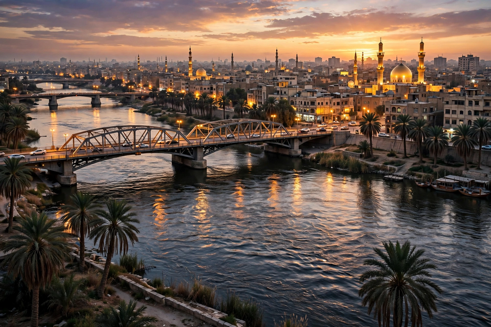

From Wikipedia, the free encyclopedia
| Baghdad | |
|---|---|
 | |
| Country | Iraq |
| Founded | 30 July 762 AD, by Caliph al-Mansur |
| Population | c. 7.7 million (metro) |
| River | Tigris |
| Role | Capital of Iraq; former capital of the Abbasid Caliphate |
Baghdad (Arabic: بغداد) is the capital and largest city of Iraq, located on the banks of the Tigris River. Founded in 762 AD by the Abbasid caliph al-Mansur as a circular planned city — the "Round City" — Baghdad became the capital of the Abbasid Caliphate and, during the Islamic Golden Age, one of the largest and most learned cities in the world.
Under the Abbasids, Baghdad's House of Wisdom (Bayt al-Hikmah) led a vast translation movement of Greek, Persian, and Indian learning, and scholars such as al-Khwarizmi advanced algebra, astronomy, and medicine. The city was a hub of world trade and the setting of many tales in One Thousand and One Nights. In 1258 the Mongols under Hulagu sacked Baghdad, destroying much of the city and its irrigation system, from which Iraq took centuries to recover.
Baghdad later passed between Safavid and Ottoman control, became the capital of the British Mandate and then the Kingdom of Iraq, and grew rapidly in the 20th century. The city suffered heavily during the Iran–Iraq War, the 1991 Gulf War, and especially the 2003 invasion of Iraq and the sectarian violence that followed.
Today Baghdad is organised around districts on both banks of the Tigris, including Karkh (west) and Rusafa (east), with historic quarters such as Kadhimiya and Adhamiyah. Landmarks include the Al-Kadhimiya shrine, Mustansiriya Madrasa, the National Museum of Iraq, and Mutanabbi Street, the centre of the city's book trade.
Categories: Baghdad | Capitals in Asia | Cities in Iraq